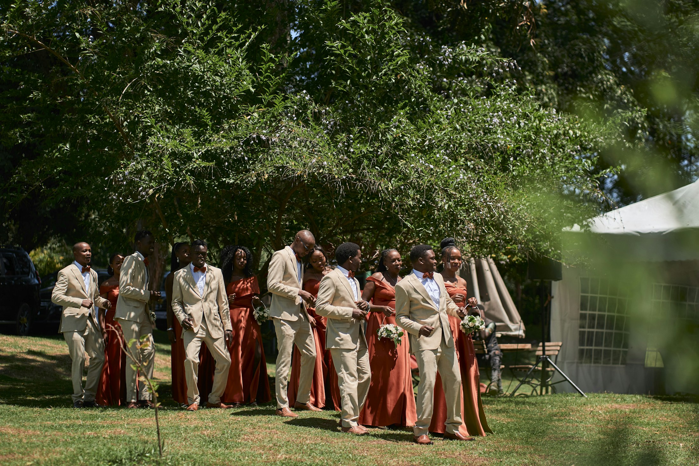

First up
Welcome toast at The Elysian Bar
Saturday027:00 PM
View the full weekend ↓
New Orleans · October 2–4, 2027
A little New Orleans.
A whole lot of love.
Everything you need for one unforgettable wedding weekend—beautifully together and easy to find.

First up
Guestbook Live + Moment Missions
The photos we didn’t see. The stories only you can tell. Help us remember every side of the celebration.

Our day, through your eyes.01 · Save the moment
Share a photo, record a video or voice note, or leave us a message. No app needed.
02 · Make the moment
A tiny challenge. A memory worth keeping.
Pick a challenge, capture it, then choose “Share a Memory” on our guestbook page. Skip anything that isn’t your style.
A note from us
Somewhere between long dinners, one more song, and the everyday little things, we found our forever. Now we get to celebrate it with you.
Join us in New Orleans for a weekend of courtyard toasts, good food, and a dance floor we hope never empties.
All our love, Bea & Milo
October 2–4, 2027
All times are local to New Orleans. Wedding-party members can find rehearsal and getting-ready times in the party guide.
The Elysian Bar
Festive cocktail attire. Drop in when you arrive.
Marigny Opera House
Please arrive by 4:40 PM. Black-tie creative.
Maison de la Luz · Guest House
546 Carondelet Street. Cocktails from 5:30 PM.
Maison de la Luz and Audubon Cottages are our sample weekend bases. This demo has no reserved room block or booking code.
Explore the hotel location ↗Fly into Louis Armstrong New Orleans International Airport. Arrange a ride to the ceremony; reception valet uses the Carondelet entrance. Return hotel shuttles begin at 10 PM, every 20 minutes.
Leave room for a French Quarter stroll, live music, and something sweet. Comfortable walking shoes are always a good idea.
Venue map & calendar ↓Reception ready
Find your table before you hit the dance floor.
Sample guest list: try Camille, Uncle Rob, Jessica, or Evelyn.
Monday evening
Dinner, toasts, and a little New Orleans magic at Maison de la Luz.
Guest House garden
Reception salon
Find your table and settle in
Champagne encouraged
Meet us by the dance floor
Song requests welcome
Beignets and chicory coffee
Carondelet Street entrance
Your turn, DJ
That song you can’t sit still for? We want to hear it.
Try a sample request. Nothing is sent to a DJ or saved after you leave this page.
Your wedding-day essentials
Monday, October 4, 2027 · 5 PM
Marigny Opera House · Please arrive by 4:40 PM.
Dinner and dancing follow at Maison de la Luz, 546 Carondelet Street.
Kindly reply by September 1, 2027
We can’t wait to have our favorite people together.
This is a sample RSVP. No personal information is sent or saved.
With gratitude
Your presence means the world to us. Here’s a little glimpse of what we’re dreaming of for our next chapter.
Sunday-morning coffee cups, a table with room for friends, and the things that turn a house into home. Your own wedding package can link to your chosen stores.
Slow mornings and a trip to remember. This sample honeymoon fund is a preview; no gifts or payments are collected.
Good to know
Black-tie creative: rich colors, polished tailoring, and comfortable dancing shoes. Wedding-party outfit details are in the attire guide.
Please follow the names on your invitation. The RSVP guest count should include only your invited party.
Return shuttles leave the Carondelet Street entrance at Maison de la Luz every 20 minutes from 10 PM through the send-off.
Reception restrooms are past the salon, through the arched hallway on the left. Sample Wi-Fi: MaisonGuest · password: beaandmilo.
Our Guestbook Live page ↗ collects photos, videos, voice messages, and notes. Visit as often as you like throughout the celebration.
The RSVP and DJ forms show a sample confirmation on this page. They don’t contact the couple, send music to a DJ, or store your information. Guestbook Live is a separate live experience.